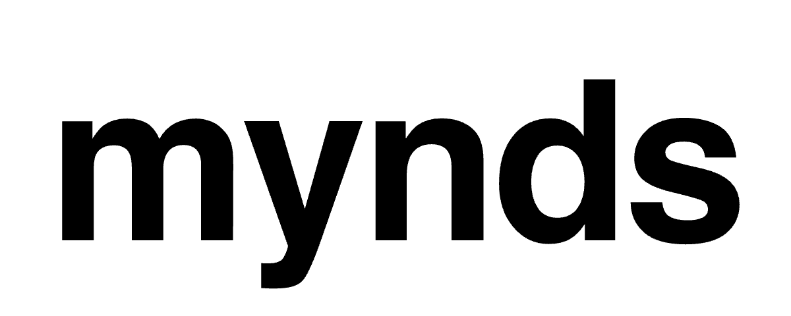
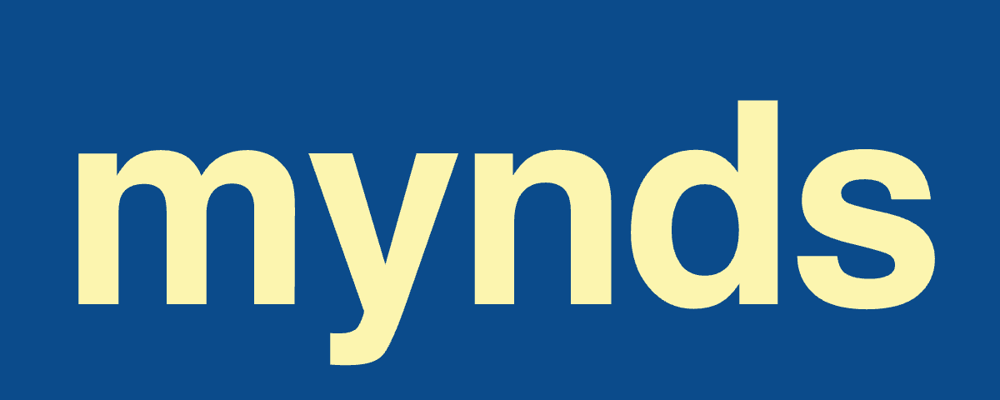
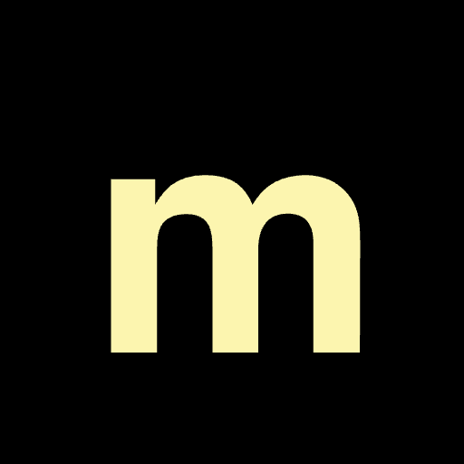
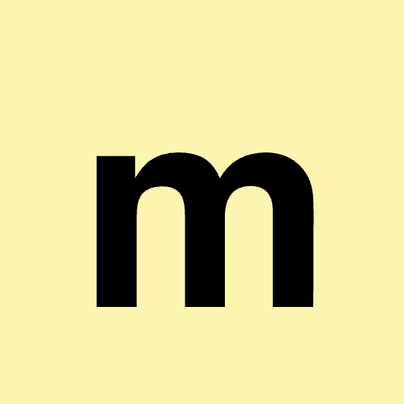

Begleitung für die Therapie-Wartezeit. Diese Folien zeigen, wie die Marke aussieht und klingt. Wie im Hero der Seite: fahr über die Buchstaben.
mynds




m
Das runde kleingeschriebene m.
Für Favicon, App-Icon und enge Plätze. Standard-Stimmung: Creme auf Blau — ruhig, erwachsen, kein Medizin-Look.
Outfit
AaBbCcDdEeFfGgHhIiJjKkLlMmNnOoPpQqRrSsTtUuVvWwXxYyZz 0123456789 · Logo, Überschriften, Zahlen
Albert Sans
AaBbCcDdEeFfGgHhIiJjKkLlMmNnOoPpQqRrSsTtUuVvWwXxYyZz 0123456789 · Fließtext, Oberfläche
Zwei Schriften, beide als variable Fonts eingebettet. Keine Anfrage an Google, keine externen Dateien: die Seite lädt alles von selbst.
„Was geht dir gerade durch den Kopf?"
Nähe.
Du-Anrede, keine Dringlichkeit, keine Belohnungslogik, kein Gamification. Und niemals: behandeln, diagnostizieren, überwachen, heilen, therapieren.
Keine Heilungs- oder Diagnose-Versprechen in irgendeiner Optik. Die Krisen-Nummern bleiben sichtbar — Pflicht, keine Design-Option. Die Krisenkarte bleibt blau.
mynds
keine Auswertung, keine Diagnose
20Wochen Ø
97%ohne Begleitung
9Monate Median
Die Seite lebt vom Wortzeichen als Monument: weißes Papier, schwarze Schrift, Orange nur auf der Aktion. Die App erscheint in ihrem echten Dark Mode.
Sanije Demiri & Inett Pees
mynds
Studienprojekt im Rahmen des MiE 2026 an der WHU — Otto Beisheim School of Management. Dies ist ein Prototyp, kein Startup in Gründung! Nicht für Diagnose, Behandlung oder akute Krisen · Hilfe: 0800 111 0 111 / 116 117 / 112
Pfeiltasten ← → oder Klick